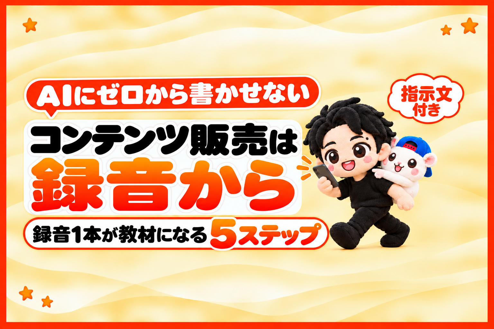

教材の素材は、AIの文章ではありません。
あなたの、毎日の録音です。
AIに記事をゼロから書かせると、どこかで読んだような一般論になります。
ググれば出てくる内容を、きれいにまとめたもの。
そこに、お金を払う人はなかなかいません。
人がお金を払うのは、手が届きそうな普通の人が、実際にうまくいったやり方です。
それを残すいちばんラクな方法が、録音でした。
例えば、ぼくはフォロワーゼロから、AIで作った教材を売り始めて2ヶ月弱。
売上は100万円をこえました。
同じ金額を約束するものではありません。
でも、やっていることは、毎日話して録音しているだけです。
この記事では、録音1本が教材になるまでを、5つのステップにまとめました。
最後に、録音を記事にするときのAIへの頼み方も付けています。
AIにゼロから書かせると、なぜ売れないのか
いまは、文章ならAIが書いてくれます。
「だったら、AIに全部書かせればいい」と思いますよね。
でも、AIにゼロから書かせると、一般的な話になってしまいます。
あなた独自のノウハウが入らない。
誰でもできることの話になる。
それは、ググれば出てくる内容を、まとめて整理したものです。
めちゃくちゃうまくまとまっていれば、売れることもあるかもしれません。
でも、そこに新しくお金を払う価値があるかというと、むずかしい。
人がお金を払うのは、こういうものです。
- あなただけが知っていること
- あなたが、実際にうまくできたこと
- ほかの人がやっても、同じようにできること(再現性)
超有名なインフルエンサーでもない、普通の一般ピーポーでも成功したノウハウ。
手が届きそうな人の、再現性のあるやり方。
だから「そのノウハウをください」と、お金を払うわけです。
AIは、文章を整える係です。
中身は、あなたの言葉から出てきます。
書くのではなく、話して録音する
じゃあ、自分で毎日書けばいいか。
これが、続かないんです。
毎日毎日、文章を書く。
超苦痛じゃないですか。
例えば、ぼくが最初に勤めた会社では、毎日日誌を書かなくてはいけませんでした。
これが本当に苦痛で、まわりのみんなも苦痛でした。
得意な人もいると思います。
でも、ほとんどの人には、書く習慣は続きません。
話すなら、続きます。
しかも、何かのついでにできます。
- 車の運転中に、ハンズフリーで話す
- 毎日の散歩中に、スマホに話す
- 家事をしながら、話す
「ながら録音」で十分です。
例えば、この記事の元の録音も、運転しながら話したものです。
録音1本が教材になるまでの5ステップ
(録音1本が、記事・短文・動画・教材に育つ流れ)
ステップ1 「AIで◯◯した」を決める
まず、あなたのノウハウを1つ作ります。
何かで稼げた話なら、いちばんです。
でも、稼げていなくても大丈夫。
例えば「AIで、質の高いLINEスタンプを大量に作れた」。
見た人が「うらやましい」「自分もやってみたい」と思うものなら、何でもネタになります。
大事なのは、AIを使ってやることです。
いま教材で売れているのは、ほぼ「AIで◯◯した」です。
AIで記事を書いた。AIで動画を編集した。AIでLINEスタンプを作った。
これが、いちばん引きが強い。
パンを作るノウハウも、売れるかもしれません。
でも、いまなら「AIで◯◯した」の形にしたほうが、手に取ってもらえます。
ネタの選び方は、こちらの記事にくわしく書きました。

ステップ2 毎日、やったことを録音する
ネタが決まったら、毎日やってみます。
やっていると、毎日いろいろ出てきます。
- その日にやったこと
- うまくいったこと、うまくいかなかったこと
- そこから分かった、成功のポイント
これを、どんどん録音してためます。
試行錯誤の途中こそ、あとで読む人がいちばん知りたいところです。
ステップ3 録音1本を、記事1本にする
録音を1本ずつ、AIで記事にします。
1本の録音から、同じ記事を4か所に出せます。
- 自分のブログ
- note(記事を売り買いできるブログのようなサービス)の無料記事
- X記事(Xの長文の投稿)
- Substack(メールマガジン)
自分のブログは、持っておいたほうがいいです。
あとで教材を売るとき、直販ができるからです。
Brain(教材の販売サイト)もnoteも、手数料は10%ちょっと。
そこまで多くはありません。
でも、直販なら「ここから買うと、いくら安い」と見せられます。
買う人も、どこで買うか迷わずにすみます。
例えば、ぼくの教材の売上の66%は、自分のブログからの直販です。
ステップ4 記事から、短文と短い動画を作る
記事ができたら、その中から短い投稿を作ってもらいます。
- Xのポスト、Threadsの投稿
- YouTubeのショート、インスタのリール、TikTokの動画
1本の録音が、ここで何本もの投稿になります。
ステップ5 記事がたまったら、教材にまとめる
記事がある程度たまったら、まとめます。
- 有料の教材
- YouTubeの長い動画
- Udemy(オンライン講座のサービス)の講座
毎日の録音が、そのまま教材の原稿になっていきます。
ゼロから教材を書こうとしなくていいんです。
AIをどこまで使うかは、各サービスの規約を確かめたうえで、自己責任で決めてください。
録音を記事にするときのAIへの頼み方
録音の文字起こしをAIに渡すときは、こう頼んでいます。
ポイントは「足さない」ことです。
これは、わたしが話した録音の文字起こしです。
この内容だけを使って、ブログ記事にしてください。
わたしが話していない事実や数字は、足さないでください。
結論を最初に書いて、1文ずつ改行してください。
わたしの言い回しや口ぐせは、なるべく残してください。
聞き取りがあやしい所は、■要確認と書いて残してください。
「足さないで」と書かないと、AIは親切に一般論を足してきます。
それが、ゼロから書かせた記事と同じ味になってしまう原因です。
まとめ: コンテンツ販売は、録音から育てる
- 「AIで◯◯した」を決める
- 毎日、ながら録音する
- 録音1本を、記事1本にする(自分のブログも持つ)
- 記事から、短文と短い動画を作る
- 記事がたまったら、教材にまとめる
AIは、整える係。
中身は、あなたの声。
だから、今日から録音する。
あなたは、今日やったことを、どこで話しますか?
▼録音から記事、教材、販売ページまで。やったことを1冊にまとめてあります
フォロワーゼロから利益95.8万円まで、54日間の数字と失敗と手順を、全部書いた教科書です。
録音から記事、教材、販売ページ、売れたあとの台帳まで。うちで毎日使っているツールも付録に入れました。
『noteから始める「AI×◯◯」コンテンツ販売の教科書｜フォロワーゼロから利益95.8万円』


販売価格は3部売れるごとに2,000円ずつ値上がりします（上限あり）。内容・最新価格は販売ページをご確認ください。